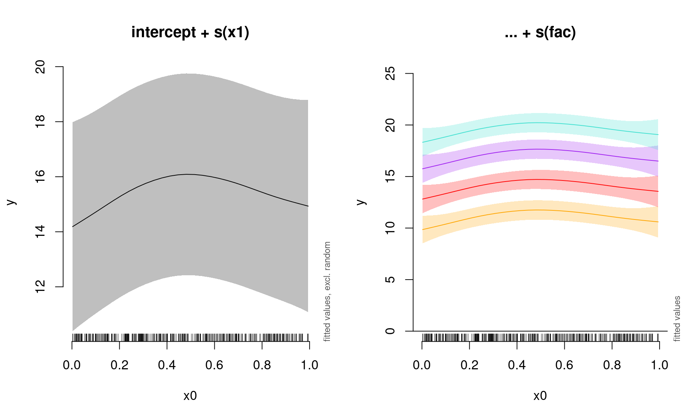
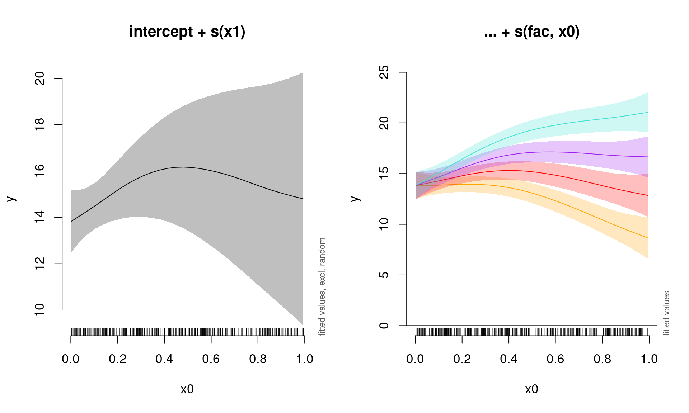
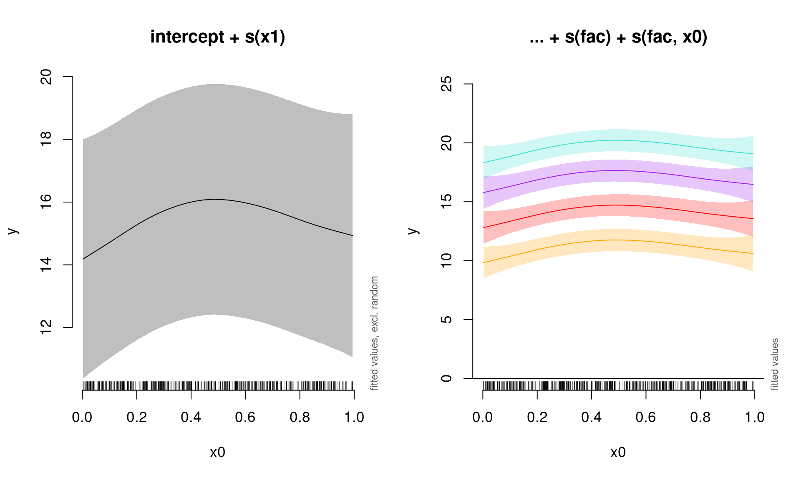
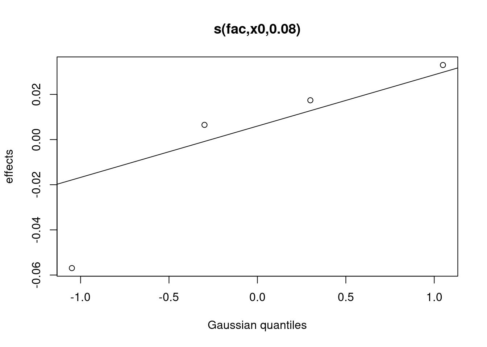
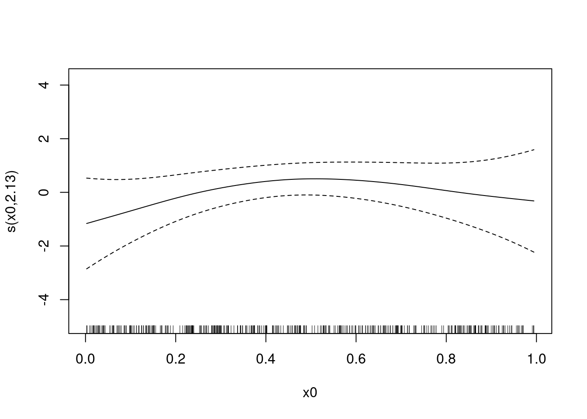

Chapitre 11 Intro rapide aux modèles additifs généralisés à effets mixtes (GAMMs)
Lorsque les observations ne sont pas indépendantes, les GAMs peuvent être utilisés soit pour incorporer:
- une structure de corrélation pour modéliser les résidus autocorrélés (autorégressif (AR), moyenne mobile (MA), ou une combinaison des deux (ARMA))
- des effets aléatoires qui modélisent l’indépendance entre les observations d’un même site.
En plus de changer la fonction de base, nous pouvons aussi complexifier
le modèle en intégrant une structure d’auto-corrélation (ou même des
effets mixtes) en utilisant les fonctions gamm() dans la librairie mgcv. Bien que nous ne l’utilisions pas ici, la librairie gamm4 peut également être utilisé pour estimer des modèles GAMMs dans R.
11.1 L’autocorrelation des résidus
Pour commencer, nous allons jeter un coup d’œil à un modèle avec de l’autocorrélation temporelle dans les résidus. Revenons au modèle de la température de Nottingham pour vérifier si les résidus sont corrélés en faisant appel à la fonction (partielle) d’autocorrélation.
par(mfrow = c(1, 2))
acf(resid(year_gam), lag.max = 36, main = "ACF")
pacf(resid(year_gam), lag.max = 36, main = "pACF")La fonction d’autocorrelaton (ACF; première figure) évalue la corrélation croisée d’une série temporelle entre points à différents décalages (donc, la similarité entre observations progressivement décalés).
En contraste, la fonction partielle d’autocorrelation (PACF: deuxième figure) évalue la corrélation croisée d’une série temporelle entre points à différents décalages, après avoir contrôlé les valeurs de la série temporelle à tous les décalages plus courts.
Les graphiques ACF et pACF sont donc utilisés pour identifier le temps nécessaire avant que les observations ne sont plus autocorrélées.
Les graphiques des fonctions d’autocorrélation suggèrent qu’un modèle AR de faible ordre est nécessaire (avec un ou deux intervalles de temps décalés).
Nous pouvons tester cet hypothèse en ajoutant des structures d’autocorrelation au modèle de température de Nottingham. Créons un modèle AR(1) (corrélation à 1 intervalle de temps décalé), et un modèle AR(2) (corrélation à 2 intervalles de temps décalés), et comparons-les avec AIC pour déterminer le modèle le mieux ajusté.
df <- data.frame(nottem, nottem_year, nottem_month)
year_gam <- gamm(nottem ~ s(nottem_year) + s(nottem_month, bs = "cc"),
data = df)
year_gam_AR1 <- gamm(nottem ~ s(nottem_year) + s(nottem_month,
bs = "cc"), correlation = corARMA(form = ~1 | nottem_year,
p = 1), data = df)
year_gam_AR2 <- gamm(nottem ~ s(nottem_year) + s(nottem_month,
bs = "cc"), correlation = corARMA(form = ~1 | nottem_year,
p = 2), data = df)Quel modèle est mieux ajusté?
AIC(year_gam$lme, year_gam_AR1$lme, year_gam_AR2$lme)## df AIC
## year_gam$lme 5 1109.908
## year_gam_AR1$lme 6 1101.218
## year_gam_AR2$lme 7 1101.598Le modèle avec la structure AR(1) donne un meilleur ajustement comparé au premier modèle (year_gam), il y a très peu d’amélioration en passant au AR(2). Il est donc préférable d’inclure uniquement la structure AR(1) dans notre modèle.
11.2 Modélisation avec effets mixtes
Comme nous l’avons vu dans la section précédente, bs spécifie la
fonction de base sous-jacente. Pour les facteurs aléatoires (origine et
pente linéaire), nous utilisons bs = "re" et pour les pentes
aléatoires non linéaires, nous utilisons bs = "fs".
Trois types d’effets aléatoires différents sont possibles lors de
l’utilisation des GAMMs (où fac représente une variable qualitative
utilisée pou l’effet aléatoire et x0 est un effet quantitatif fixe) :
- interceptes aléatoires ajustent la hauteur des termes du modèle
avec une valeur constante de pente :
s(fac, bs = "re") - pentes aléatoires ajustent la pente d’une variable explicative
numérique:
s(fac, x0, bs = "re") - surfaces lisses aléatoires ajustent la tendance d’une prédiction
numérique de façon non linéaire:
s(x0, fac, bs = "fs", m = 1)où l’argument \(m=1\) met une plus grande pénalité au lissage qui s’éloigne de 0, ce qui entraîne un retrait vers la moyenne.
Pour plus de détails sur les effets aléatoires, voir l’Atelier 7.
Ceci est une introduction (très!) brève aux effets aléatoires dans les GAMMs. Pour plus de détails, nous recommandons fortement Pedersen et al. (2019), un article très accessible qui décrit plusieurs façons de spécifier des GAMMs pour répondre à des questions écologiques.
11.2.1 GAMM avec un intercepte aléatoire
Nous allons utiliser gamSim() pour générer un ensemble de données, cette fois-ci avec un effet aléatoire. Ensuite, nous construirons un modèle avec un intercepte aléatoire en utilisant fac comme facteur aléatoire.
# Simuler des données
gam_data2 <- gamSim(eg = 6)## 4 term additive + random effectGu & Wahba 4 term additive modelhead(gam_data2)## y x0 x1 x2 x3 f f0
## 1 7.447214 0.01187972 0.2035120 0.4945059 0.73141941 7.337059 0.07462514
## 2 22.628251 0.68667889 0.9666880 0.2213280 0.67339805 23.466335 1.66579998
## 3 23.781802 0.58399076 0.2748391 0.1986483 0.45359493 21.224725 1.93077842
## 4 19.418014 0.92468357 0.4035589 0.3976822 0.06634208 19.038438 0.46882376
## 5 15.768860 0.86561852 0.8469147 0.2192735 0.33276781 18.132802 0.81948517
## 6 11.283497 0.21012765 0.3788559 0.4912578 0.21573884 12.131255 1.22644773
## f1 f2 f3 fac
## 1 1.502340 2.760094 0 1
## 2 6.912808 8.887727 0 2
## 3 1.732695 8.561251 0 3
## 4 2.241438 4.328176 0 4
## 5 5.440274 8.873043 0 1
## 6 2.133389 2.771418 0 2# Rouler un modèle avec intercepte aléatoire
gamm_intercept <- gam(y ~ s(x0) + s(fac, bs = "re"), data = gam_data2,
method = "REML")
# Voir la sortie du modèle
summary(gamm_intercept)$s.table## edf Ref.df F p-value
## s(x0) 2.638784 3.277115 3.800617 0.008627317
## s(fac) 2.969756 3.000000 98.050964 0.000000000Notez qu’il y a maintenant un terme aléatoire dans le sommaire du modèle. Vous pouvez visualiser les intercepts aléatoires pour chaque niveau de fac comme ceci:
plot(gamm_intercept, select = 2)
# select = 2 parce que le terme aléatoire se trouve sur la
# 2e ligne du tableau sommaire.Nous pouvons également utiliser la fonction plot_smooth pour visualiser le modèle, qui nous permet de visualisés des
effets sommés d’un GAM (basé sur les prédictions). Cette fonction permet également de supprimer les effets aléatoires en définissant rm.ranef = TRUE.
On peut premièrement visualiser l’effet combiné de x0 sans les niveaux de l’effet aléatoire, et ensuite une courbe pour chacun de quatre niveaux de l’effet aléatoire fac:
par(mfrow = c(1, 2), cex = 1.1)
# Visualiser les effets combinés de x0 (sans effets
# aléatoires)
plot_smooth(gamm_intercept, view = "x0", rm.ranef = TRUE, main = "intercept + s(x1)")
# Visualiser chaque niveau de l'effet aléatoire
plot_smooth(gamm_intercept, view = "x0", rm.ranef = FALSE, cond = list(fac = "1"),
main = "... + s(fac)", col = "orange", ylim = c(0, 25))
plot_smooth(gamm_intercept, view = "x0", rm.ranef = FALSE, cond = list(fac = "2"),
add = TRUE, col = "red")
plot_smooth(gamm_intercept, view = "x0", rm.ranef = FALSE, cond = list(fac = "3"),
add = TRUE, col = "purple")
plot_smooth(gamm_intercept, view = "x0", rm.ranef = FALSE, cond = list(fac = "4"),
add = TRUE, col = "turquoise")
11.2.2 GAMM avec une pente aléatoire
Ensuite, spécifions un modèle avec une pente aléatoire:
gamm_slope <- gam(y ~ s(x0) + s(x0, fac, bs = "re"), data = gam_data2,
method = "REML")
summary(gamm_slope)$s.table## edf Ref.df F p-value
## s(x0) 2.450294 3.043891 2.207364 0.08440636
## s(x0,fac) 2.962920 3.000000 83.852918 0.00000000On peut encore une fois visualiser l’effet combiné de x0 sans les niveaux de l’effet aléatoire, et ensuite une courbe pour chacun de quatre niveaux de l’effet aléatoire fac:
par(mfrow = c(1, 2), cex = 1.1)
# Visualiser les effets combinés de x0 (sans effets
# aléatoires)
plot_smooth(gamm_slope, view = "x0", rm.ranef = TRUE, main = "intercept + s(x1)")
# Visualiser chaque niveau de l'effet aléatoire
plot_smooth(gamm_slope, view = "x0", rm.ranef = FALSE, cond = list(fac = "1"),
main = "... + s(fac, x0)", col = "orange", ylim = c(0, 25))
plot_smooth(gamm_slope, view = "x0", rm.ranef = FALSE, cond = list(fac = "2"),
add = TRUE, col = "red")
plot_smooth(gamm_slope, view = "x0", rm.ranef = FALSE, cond = list(fac = "3"),
add = TRUE, col = "purple")
plot_smooth(gamm_slope, view = "x0", rm.ranef = FALSE, cond = list(fac = "4"),
add = TRUE, col = "turquoise")
11.2.3 GAMM avec un intercept et une pente aléatoire
On peut aussi inclure un intercept et une pente aléatoire.
gamm_int_slope <- gam(y ~ s(x0) + s(fac, bs = "re") + s(fac,
x0, bs = "re"), data = gam_data2, method = "REML")
summary(gamm_int_slope)$s.table## edf Ref.df F p-value
## s(x0) 2.579562 3.20239 3.145117 0.022324891
## s(fac) 2.839378 3.00000 508.130983 0.000000000
## s(fac,x0) 2.303797 3.00000 296.365269 0.004959271On peut encore une fois visualiser l’effet combiné de x0 sans les niveaux de l’effet aléatoire, et ensuite une courbe pour chacun de quatre niveaux de l’effet aléatoire fac:
par(mfrow = c(1, 2), cex = 1.1)
# Visualiser les effets combinés de x0 (sans effets
# aléatoires)
plot_smooth(gamm_int_slope, view = "x0", rm.ranef = TRUE, main = "intercept + s(x1)")
# Visualiser chaque niveau de l'effet aléatoire
plot_smooth(gamm_int_slope, view = "x0", rm.ranef = FALSE, cond = list(fac = "1"),
main = "... + s(fac) + s(fac, x0)", col = "orange", ylim = c(0,
25))
plot_smooth(gamm_int_slope, view = "x0", rm.ranef = FALSE, cond = list(fac = "2"),
add = TRUE, col = "red")
plot_smooth(gamm_int_slope, view = "x0", rm.ranef = FALSE, cond = list(fac = "3"),
add = TRUE, col = "purple")
plot_smooth(gamm_int_slope, view = "x0", rm.ranef = FALSE, cond = list(fac = "4"),
add = TRUE, col = "turquoise")
Notez que la pente aléatoire est statique dans ce cas:
plot(gamm_int_slope, select = 3)
# select = 3 parce que la pente aléatoire est sur la
# troisième ligne de notre tableau sommaire.11.2.4 GAMM avec une surface lisse aléatoire
Finalement, spécifions un modèle avec une surface lisse aléatoire.
gamm_smooth <- gam(y ~ s(x0) + s(x0, fac, bs = "fs", m = 1),
data = gam_data2, method = "REML")## Warning in gam.side(sm, X, tol = .Machine$double.eps^0.5): model has repeated
## 1-d smooths of same variable.summary(gamm_smooth)$s.table## edf Ref.df F p-value
## s(x0) 2.423260 2.942415 2.43033 0.0764996
## s(x0,fac) 7.292933 35.000000 8.85519 0.0000000Si la pente aléatoire variait selon x0, on verrait différentes courbes pour chaque niveau:
plot(gamm_smooth, select = 1)
# select = 1 parce que la surface lisse aléatoire est sur
# la première ligne de notre tableau sommaire.On peut encore une fois visualiser l’effet combiné de x0 sans les niveaux de l’effet aléatoire, et ensuite une courbe pour chacun de quatre niveaux de l’effet aléatoire fac:
par(mfrow = c(1, 2), cex = 1.1)
# Visualiser les effets combinés de x0 (sans effets
# aléatoires)
plot_smooth(gamm_smooth, view = "x0", rm.ranef = TRUE, main = "intercept + s(x1)")
# Visualiser chaque niveau de l'effet aléatoire
plot_smooth(gamm_smooth, view = "x0", rm.ranef = FALSE, cond = list(fac = "1"),
main = "... + s(fac) + s(fac, x0)", col = "orange", ylim = c(0,
25))
plot_smooth(gamm_smooth, view = "x0", rm.ranef = FALSE, cond = list(fac = "2"),
add = TRUE, col = "red")
plot_smooth(gamm_smooth, view = "x0", rm.ranef = FALSE, cond = list(fac = "3"),
add = TRUE, col = "purple")
plot_smooth(gamm_smooth, view = "x0", rm.ranef = FALSE, cond = list(fac = "4"),
add = TRUE, col = "turquoise")
11.2.5 Comparaison de GAMM
Tous les GAMMs de cette section peuvent être comparé avec AIC() pour trouver le modèle le mieux ajusté:
AIC(gamm_intercept, gamm_slope, gamm_int_slope, gamm_smooth)## df AIC
## gamm_intercept 8.064772 2241.613
## gamm_slope 8.043350 2267.827
## gamm_int_slope 10.876422 2237.523
## gamm_smooth 13.408792 2239.421Le meilleur modèle de ces trois modèles serait donc le GAMM avec un intercept aléatoire.